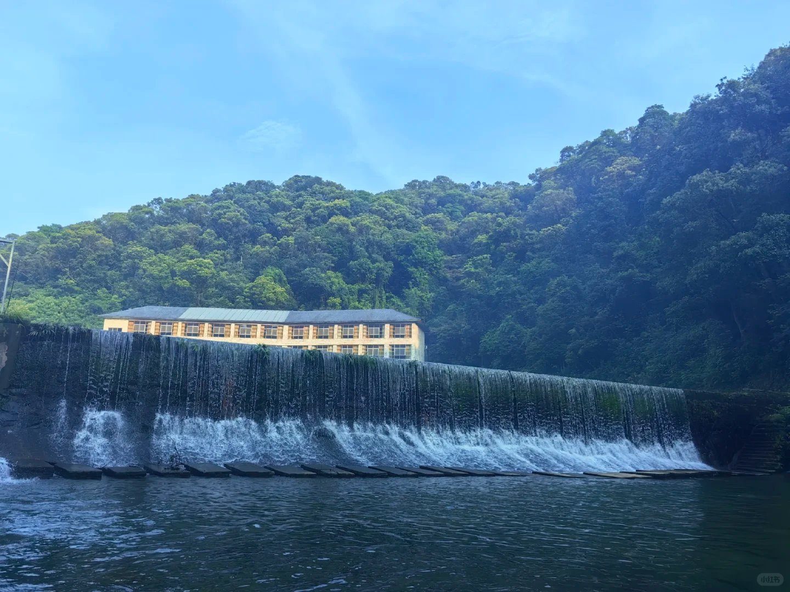
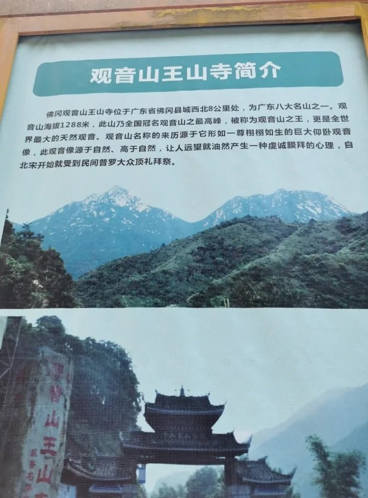
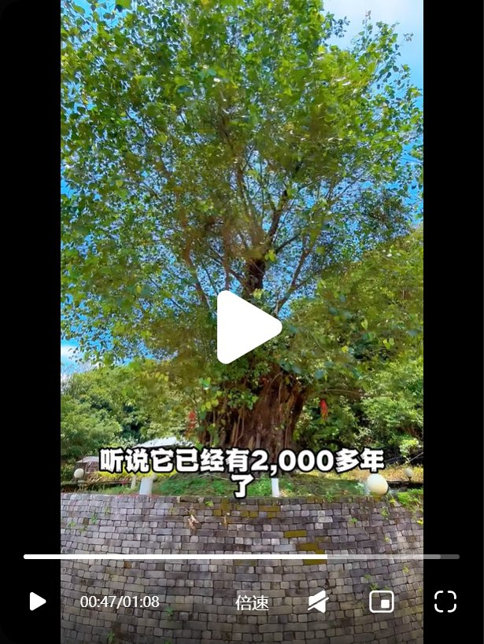
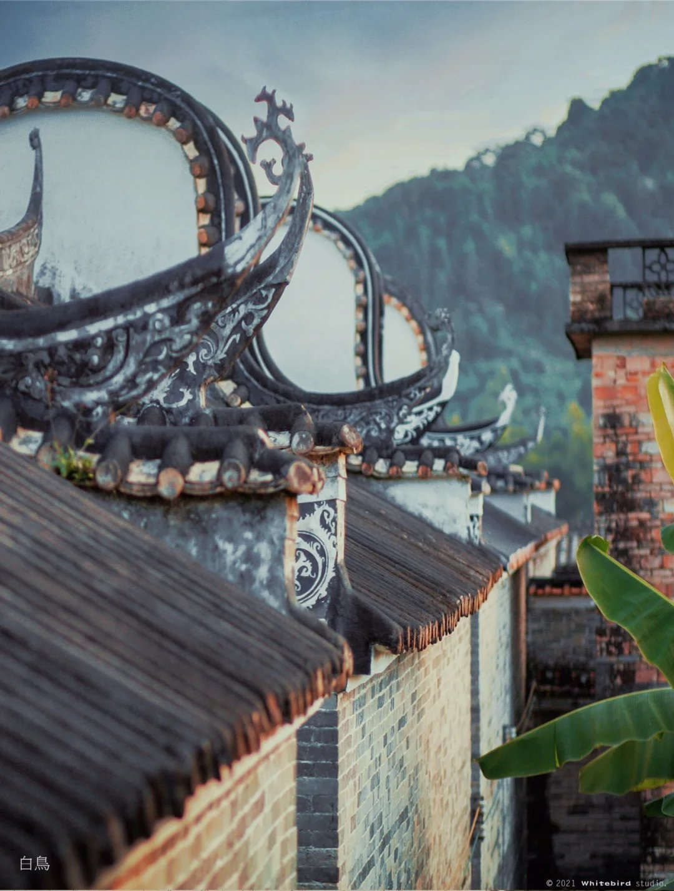
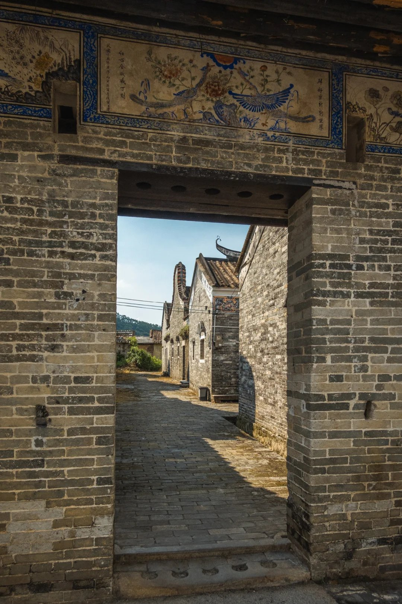
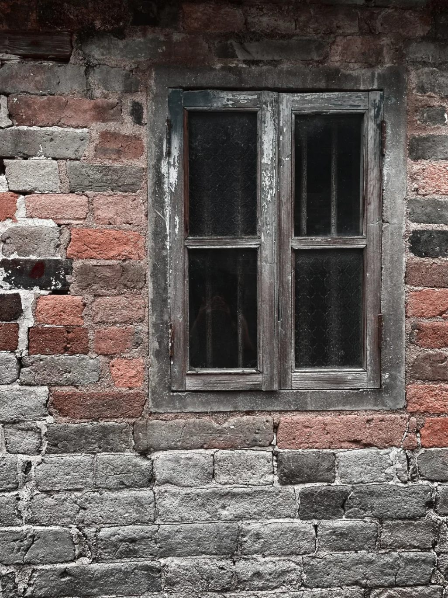

上岳古村镬耳楼群 × 观音山王山寺 · 两大锚点全免票
环线串联逻辑：上午进山林（凉快）→ 正午农家菜 → 下午逛古村（巷弄有荫）→ 傍晚返程。
广州西村 → 京港澳G4/佛冈出口 → 观音山王山寺（80km）→ S292→S252 → 上岳古村（33km）→ 汕湛→广连 → 回西村（93km）。总里程约 206km，纯驾驶约 4h（以当日导航为准）。
王山寺免票（2026-05-01 起）+ 天然仰卧观音山形 + 千年菩提树；上岳 720 年南宋古村、28 座镬耳楼、朱熹后裔家风；午餐古村岳农庄民安白切鸡。
周六晴 21–30℃，体感偏热；森林火险橙色预警生效中——火种不入山。详见 天气影响评估。
按行程顺序排列；实景图均为网络采集参考图（来源见图注），以实地为准。



整座山体天然形似仰卧观音；王山寺供明代三面十二臂观音、汉白玉观音等古造像，寺内植有佛陀成道地菩提树母树后代的千年菩提。森林氧吧、瀑布龙潭。亲子走"寺+朝圣广场+湖边栈道"平缓段，人文背景·讲给孩子听。⚠️ 导航须搜全名「观音山王山寺风景区」——对面另有「佛冈观音山风景区」，没有王山寺。



720 余年南宋古村，朱熹后裔（朱文焕一脉）聚居地；明清民居 37 幢 108 座、28 座镬耳楼完好；归仁里三组、朴山/朝瑞朱公祠（民俗馆）、五龙过脊、古井、风水塘，"象棋之乡"。0 商业化原生态，人文背景·讲给孩子听。
本地食材农家菜：民安白切鸡（果园走地鸡蘸沙姜酱油）、碌乌鬃鹅、客家酿三宝、时令山野菜。评分 4.3 / 人均约 ¥56。出行前一晚电话订位，周末饭点走量。
线路A（观音山上午 → 上岳下午），km 已圈定；日期按建议取 2026-10-31 周六，改周日要素不变（见天气评估）。点击方案可分享深链。
| 出发 | 到达 | 目的地或项目 | 耗时 |
|---|---|---|---|
| 07:00 | 08:30 | 广州西村 → 观音山王山寺（京港澳G4 → 佛冈出口 → S292） | 1.5h |
| 08:30 | 11:00 | 观音山王山寺（寺 + 朝圣广场 + 湖边栈道，平缓段不登顶） | 2.5h |
| 11:00 | 11:45 | S292 → S252 南下赴上岳古村（33km） | 0.75h |
| 11:45 | 13:00 | 午餐 · 古村岳农庄（白切鸡/碌鹅，已订位） | 1.25h |
| 13:00 | 13:15 | 村口停车场停车，步行入村 | 0.25h |
| 13:15 | 15:30 | 上岳古村（归仁里 → 民俗馆 → 古井 → 风水塘 → 观景台俯拍） | 2.25h |
| 15:30 | 17:00 | 返程广州西村（汕湛高速 → 广连高速，93km） | 1.5h |
周六早走避出城高峰；满油、水与零食装车。导航点①「观音山王山寺风景区」（务必全名）。过路费单程约 ¥35–50。
山门 → 王山寺（大殿/明代观音造像/千年菩提树）→ 朝圣广场仰拍「天然仰卧观音」山形 → 湖边木栈道 → 瀑布龙潭方向走到体力半程即折返。全程森林荫蔽，不登顶（1288m 非本日目标）。给孩子讲：躺着的观音与菩提树 →
S292→S252 约 41 分钟抵龙山镇。古村岳农庄：民安白切鸡、碌乌鬃鹅、酿三宝、山野菜（人均约 ¥56，已订位）。等位久就切备选农庄（电话见景点卡）。
村口免费停车场步行 3 分钟入村。动线：归仁里门楼（上/中/下三组）→ 朴山朱公祠（民俗馆）→ 朝瑞朱公祠 → 青云巷/古井 → 五龙过脊、五龙过阶 → 风水塘 → 观景台俯拍全景（8 元/人）。巷弄有荫，午后也走得舒服；村口豆腐花 2 元/碗。给孩子讲：戴官帽的村子与朱熹家风 →
导航直接设「家」：汕湛高速 → 广连高速，93km 约 1.5h。时间富余可加项「渔游下岳」（上岳邻村竹筏+窑烤，+1.5–2h），默认不加。
带孩子看懂背景，旅行不只是看热闹。
背景：南宋末年，朱熹第六代孙朱文焕（抗元名将）后人南迁至此建村，720 多年。明清民居 37 幢 108 座、28 座镬耳楼完好，是广东保存最完整的镬耳屋古建筑群；村民自明代起爱下棋，是"象棋之乡"。
背景：观音山海拔 1288 米，是广东著名"观音名山"之最高峰；整座山体天然形似仰卧的观音，被称为天然"仰卧观音"，自北宋起就受民间礼拜。王山寺是千年古刹（战争中被毁后重建），存明代三面十二臂观音、汉白玉观音等古造像，还有一棵由佛陀成道地菩提树母树种子繁育而来的菩提树。这里森林覆盖率极高，是华南负离子含量最高的区域之一。
核实于 2026-10-30（百科 / Trip.com / 去哪儿 / 腾讯地图多源交叉）；以出行当日官方公告为准。
| 景点 / 场馆 | 开放时间 | 门票参考 | 备注 |
|---|---|---|---|
| 观音山王山寺 | 约 08:30–17:00（有源称 08:00 开） | 免票（2026-05-01 起；现场设票口则以公告为准，兜底 ¥35–50/人） | 电话 0763-4882088；导航须全名 |
| 上岳古村 | 全天开放；民俗馆 8:30–17:30 | 免费（观景台自愿 8 元/人） | 村口免费停车场；石板路平底鞋 |
| 古村岳农庄（午餐） | 08:00–20:00 | 人均约 ¥56 | 订位 13417274694；备选农庄见景点卡 |
核实于 2026-10-30（墨迹天气 / 中国天气网广东站 / 广东省气象台多源一致）；出发当日再查实时预警。
晴，21–30℃，降水 0%，东南风 3 级。可出行，体感偏热（正午体感约 32℃）：行程已按"上午山林荫蔽 → 正午用餐 → 下午古村巷弄"避开正午暴晒。防晒帽/防晒霜/每人 ≥1L 水。
多云，23–29℃；珠三角中南部有分散小雨可能，早晚轻雾。若改周日：带雨具、早出发；王山寺山道湿滑则缩短瀑布段。
近期高温干燥破纪录，林火气象风险高：火种不入山，山区严禁吸烟、野炊、明火。此为当日最硬约束。
行前一晚与行中提醒。